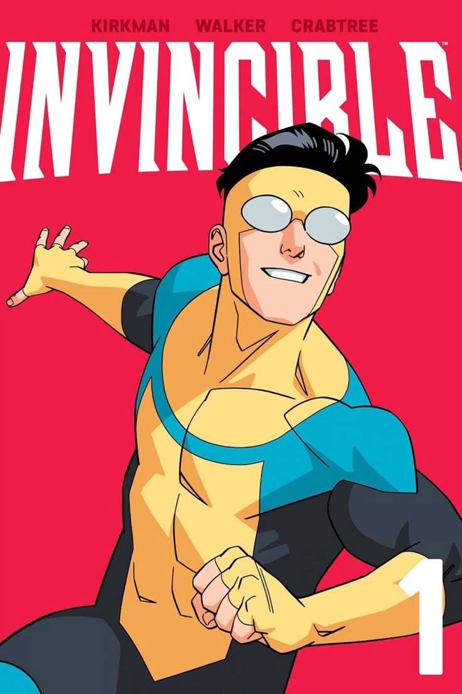

| celula 1 | celula |
A série animada Invencível segue Mark Grayson, um adolescente cujo pai é o super-herói mais poderoso da Terra, Omni-Man. Aos 17 anos, Mark desenvolve seus próprios poderes, mas logo descobre que o legado de seu pai é mais sombrio e violento do que imaginava, mudando sua vida para sempre.
A animação é baseada nos quadrinhos de Robert Kirkman, o mesmo criador de The Walking Dead.
